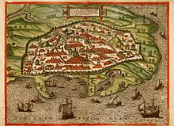

350-370 i morta el 415 a. C.
Fou una filosofia, astronomia i matemàtica hel·lenística neoplatònica d'Alexandria, a la província romana d'Orient d'Egipte.
Era una dels ments més brillants de l'escola neoplatònica de la ciutat, on donava classes de filosofia i astronomia.
